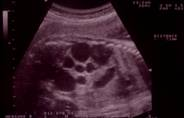
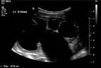
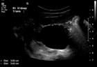
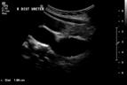
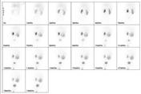
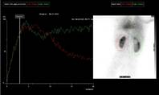
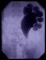
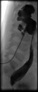

Hydronephrosis
Definition
Hydronephrosis is defined as dilatation of the renal pelvis and/or calyces1. It may occur as a result of impairment of urine flow or the retrograde flow of urine.
Classifications
Confusingly, different methods of classifying the severity of hydronephrosis on ultrasound are used either side of the Atlantic2. In North America, the SFU classification 3 has been adopted as the gold standard4. SFU Grade 1 describes a spilt renal pelvis. Grade 2 refers to further dilatation of the renal pelvis with a few calyces being visualized. Grade 3 is renal pelvic dilatation with many distended calyces, and with additional thinning of the renal parenchyma representing Grade 4. However, the subjectiveness of assessing the appearance of the calyces, renal pelvis and parenchyma results in significant inter-observer variation especially for the higher grades of hydronephrosis5. In Europe, the more objective method of measuring the anterior-posterior pelvic diameter in the transverse plane is employed6, combined with a still subjective description of the degree of calyceal dilatation and quality of the parenchyma.
Antenatally diagnosed hydronephrosis
In utero, hydronephrosis is defined as fetal renal pelvic diameter >5 mm in the second trimester and >7 mm in the third trimester6,7. Urine formation is thought to begin between the 5th and 8th weeks of gestation8. At 20 weeks, the fetus produces approximately 5cc of urine per hour and by the 40th week this increases to 50cc per hour. The fetal bladder can be observed to empty on ultrasound by the 15th week. The bladder capacity which is approximately 10cc at 30 weeks increases to 50cc at term.
Antenatally diagnosed dilatation of the urinary tract can result from either impairment of urine flow or retrograde reflux of urine. Urine flow impairment can occur at any level in the urinary tract, and may affect one or both sides. Dilatation of the renal pelvis and calyces is the first anatomical response to impairment of urine flow and may lead to histological damage of the renal parenchyma and changes in renal function. Histological damage is related to the degree and level of urine flow impairment and its duration. Renal atrophy, as seen in patients with multicystic dysplastic kidney, is the ultimate response to impairment of urine flow related to the onset of apoptosis9 (Figure 1). When urine flow impairment is present early in pregnancy, the renal parenchyma develops dysplasia10, and in severe cases there is a reduction of the ipsilateral glomerular filtration rate (GFR). Where outflow of urine from both kidneys is markedly impaired, this will result in fetal oliguria or anuria. While fetal urine is not a major contributor to amniotic fluid volume in the first trimester, oliguria or anuria thereafter leads to oligo- or anhydramnios7. When urine flow impairment becomes significant later in gestation or is partial, it generates dilatation of the excretory system without affecting the parenchymal structure11,12.

Figure 1: Antenatal Ultrasound image of a multi-cystic dysplastic kidney in a mid-gestation fetus. The markers indicate the renal length (71mm). Note the multiple large cysts amongst bright parenchyma, which appeared non-communicating on careful ultrasound examination.
Natural History
In the past, the management of hydronephrosis was straight forward because children presented with symptoms, particularly infection or pain, which warranted operation. Today congenital anomalies of the kidney and urinary tract (CAKUT) are increasingly detected by antenatal ultrasound, with 1:850 pregnancies13 having an antenatally detected urinary tract anomaly (AUTA)14. The advances in ultrasound technology and the resultant identification of large numbers of asymptomatic upper tract dilatations have forced physicians to alter their understanding of the significance of hydronephrosis. Long term natural history studies show that dilatation often improves or resolves spontaneously15,16; hydronephrosis is not synonymous with obstruction17,18.
Postnatal assessment of the neonate with antenatal hydronephrosis
When antenatal hydronephrosis is discovered, it is imperative to confirm the diagnosis postnatally. Knowledge of the prenatal evaluations during the progression of pregnancy forms the starting point of the assessment of the newborn19. The degree of unilateral or bilateral hydronephrosis, ureteric dilatation, renal size and parenchymal appearance, visualization and size of the fetal bladder as well as the amniotic fluid volume in relation to gestational age are the key facts to obtain from antenatal ultrasound7. The likelihood of significant postnatal pathology correlates to the severity of antenatal hydronephrosis20.
Clinical examination:
A thorough physical examination of the neonate is required. This may reveal a palpable abdominal mass in neonates with an uretero-pelvic junction anomaly (UPJA), multicystic dysplastic kidney (MCDK), autosomal-recessive polycystic kidney disease and in congenital bladder outflow obstruction, such as posterior urethral valves (PUVs) and urethral atresia19. Urinary tract abnormalities can occur secondary to other congenital anomalies, for example, neural tube defects, and feature in many chromosomal anomalies and syndromes21. For instance, deficient abdominal wall musculature with bilateral cryptorchism raises the possibility of prune-belly syndrome, whereas anorectal or esophageal atresia may point to the VACTERL association (vertebral anomalies, anal atresia, cardiovascular anomalies, tracheo-esophageal fistula, esophageal atresia, renal and/or radial anomalies, limb defects). Secondary effects of oligohydramnios – due to oliguria or anuria in the second half of pregnancy – may be present, culminating in the Potter sequence or talipes19. Whilst the appearance of the open bladder in the anterior abdominal wall in vesical exstrophy is striking, other CAKUT may have no obvious manifestations on physical examination. A postnatal ultrasound is therefore necessary.
Investigations:
Postnatal ultrasound should be done after day 2 or 3 of life22 because ultrasonography earlier than this can lead to a false-negative result23, due to the relative oliguria of the newborn period6. If no abnormality is detected, a repeat ultrasound scan is advisable at 6 weeks of age19,20. The ultrasound evaluation must comprise images of the bladder including the bladder wall thickness and the presence of dilated ureters or ureteroceles, prone views of the kidneys for accurate measurement of the renal length and the renal pelvic diameter in the anterior–posterior plane, as well as an assessment of calyceal dilatation and the renal parenchyma6. An algorithm for the investigation of the neonate with antenatal hydronephrosis is provided below.
An early postnatal ultrasound is essential for all fetuses with bilateral hydronephrosis >20 mm or hydronephrosis >20 mm in a solitary kidney. Many of these neonates require referral to a pediatric urologist. Early ultrasound, ideally between day 3 and 7 of life, is also recommended where details of the prenatal history are incomplete or a reliable late third-trimester scan is missing. Ultrasound assessment of the neonate with antenatal unilateral or bilateral hydronephrosis >15 mm, with or without ureteric dilatation, is advised in the first 7–10 days of life. These babies require antibiotic prophylaxis.
For the remainder (antenatal hydronephrosis >7 mm in the second trimester and/or >10 mm in the third trimester, but less than 15 mm) an ultrasound can be performed in the first 2–3 weeks of life, and antibiotic prophylaxis is no longer recommended. Instead, parents should be given information about the signs of UTI and advised to seek help early if their baby develops such signs.
If the postnatal ultrasound scan shows unilateral renal pelvic dilatation, no further investigations need to be done until 4–6 weeks of age. Isotope renography can then be performed at 4–12 weeks, when the kidneys have matured sufficiently for this to be reliable. As a guide, we advocate a MAG3 study at 4 weeks for hydronephrosis >30 mm, at 4–6 weeks for hydronephrosis >20 mm and at 3 months for hydronephrosis of 15–20 mm and 10–15 mm with calyceal dilatation. Bilateral dilatation in boys requires an early voiding cystourethrogram (VCUG) to exclude bladder outlet obstruction.
The role of the VCUG in neonates with unilateral dilatation is less well established, and there is still controversy20. Initially it was felt that all babies with pelvic dilatation of any degree required a VCUG in order to exclude reflux, which is present in approximately 15–20%24. More recent studies have questioned the clinical significance of this reflux. We, like many other centers25, advocate performing a VCUG only in patients with bilateral or unilateral hydronephrosis >10 mm in a solitary kidney, with a dilated ureter or where there is a suspicion of an abnormal bladder. A VCUG is not necessary when there is unilateral hydronephrosis and a normal contralateral kidney. Others, however, still recommend that a VCUG is done in all cases where significant hydronephrosis persists postnatally19,26. Babies should receive treatment dose antibiotics (Trimethoprim 4 mg/kg bd) on the day of the VCUG and on the subsequent 3 days, to prevent the complication of infection.
Prophylactic antibiotics:
The use of prophylactic antibiotics is also debated20,27,28. While some units advocate their use in all neonates undergoing investigation for antenatal hydronephrosis26,27, others advise that instead of routine prophylaxis families should be educated on the signs and symptoms of UTI to enable prompt diagnosis and treatment if infection occurs19. We advocate prophylactic trimethoprim at 2 mg/kg nocte initially for all neonates who fulfill the criteria for VCUG, and subsequently for those who are found to have grade III to V vesicoureteric reflux (VUR), in the absence of VUR but presence of ureteric dilatation >10 mm, and for those with hydronephrosis >20 mm.
Underlying etiologies
Following the initial newborn and 6–12-week investigations, a diagnosis can be made in the majority of infants. The table below lists the most common renal parenchymal anomalies and causes of dilatation, which may co-exist. The individual diagnoses are discussed in the following chapters.
Renal parenchymal anomalies |
Dilatation – common causes |
Multicystic dysplastic kidney |
Uretero-pelvic junction anomaly |
Uni- or bilateral renal agenesis |
Uretero-vesical junction anomaly |
Dysplasia and/or hypoplasia |
Megaureter |
Abnormalities of migration and fusion |
Vesico-ureteric reflux |
Duplication anomalies |
Posterior urethral valves/urethral atresia |
Uretero-pelvic junction anomaly (UPJA or PUJA)
Definition
A pelvi-ureteric junction anomaly is defined as impairment to the flow of urine from the renal pelvis into the ureter causing pathological dilatation of the renal pelvis and calyces, and culminating in progressive renal damage. The diagnosis of UPJA can be suspected when an ultrasound scan shows a dilated renal pelvis without ureteric dilatation and a normal bladder6,7.
Incidence
UPJA is the most common antenatally-diagnosed urinary tract anomaly29,30, accounting for approximately half of all antenatal hydronephrosis15. The left side is more commonly affected than the right at a ratio of 2:11. UPJA is bilateral in 10% to 20% of cases and is twice to three times as common in males than females7,31.
Etiology
The majority of UPJA is primary and congenital in origin, although the problem may not become clinically apparent until much later in life.
Primary UPJA - Intrinsic:Congenital UPJA is typically characterized histologically by abnormal fibromuscular and neural arrangements at the UPJ32, interfering with the normal peristalsis of urine at this point (see pathophysiology).
Extraluminal: Alternatively or additionally, extrinsic compression of the UPJ, which may be intermittent, can result from, for instance, aberrant vessels crossing to the lower pole of the kidney7. Occasionally, the ureter can be compressed by the inferior vena cava or distorted by the isthmus of a horseshoe kidney. Even so, an intrinsic etiology remains more common in a horseshoe kidney with UPJA than distortion by its isthmus.
Intraluminal: Obstruction by stones or fibro-epithelial polyps is uncommon in children.
Secondary UPJA:In severe cases of vesico-ureteric reflux, the ureter may become extremely tortuous and kink on itself producing a secondary UPJA. Scarring following previous surgery or impacted stones may result in a stricture at the UPJ.
Genetics
Congenital UPJA appears sporadic and only half a dozen families with a high incidence of hydronephrosis have previously been reported in the literature: linkage to the HLA region of chromosome 6 was identified in some but not in other families33. As for other CAKUT34,35, genetic heterogeneity in congenital UPJA should be anticipated in view of our realization of the complexity of the regulatory signaling networks involved in ureterogenesis.
Embryology
Metanephric mesenchyme signals to the ureteric bud to initiate its outgrowth from the posterior aspect of the mesonephric duct into the metanephric blastema36 in the 5th week of gestation. The ureteric bud gives rise to the epithelium of the renal pelvis and ureter - the urothelium - and branches repeatedly to form the collecting ducts. The collecting duct tips induce metanephric mesenchymal cell aggregation and mesenchymal-to-epithelial transformation for nephron formation. Mesenchymal cells surrounding the stalk of the ureteric bud develop into the cells of the lamina propria, smooth muscle and connective tissue of the renal pelvis and ureter. Reciprocal signaling between the epithelial and mesenchymal components of the renal pelvis and ureter is essential for their correct development. While canalization of the ureter is achieved by the end of embryogenesis, maturation of the ureteric wall continues well beyond birth, which may explain the spontaneous improvement or resolution of many antenatally detected hydronephroses7.
Molecular control
The molecular control of normal ureterogenesis is only beginning to be unraveled37,38. As developmental processes and their genes are highly conserved between species, animal models are contributing greatly to our knowledge. More and more genes expressed during normal urinary tract development are being identified, mostly from work on the mouse39,40. Different techniques are being employed to explore the function of these genes, including in vitro cell and organ culture experiments, and mouse mutants with specific gene knock-outs. The identification of particular mutations in corresponding human genes in some children with urinary tract malformations39,40 is providing further insight.
So far, several regulatory networks have been suggested for ureteric development, which may interconnect or operate in parallel. For instance, Airik et al41 have suggested an independent role for the transcription factor T-box 18 (Tbx18) on Wnt signaling and on a cascade involving sonic hedgehog (Shh) – Patched142 – bone morphogenetic protein 4 (Bmp4)43. The highly conserved gene, Teashirt 3 (Tshz3), which encodes a transcription factor, may act downstream or as a permissive co-factor to the Shh pathway, and has effects on retinoic acid signaling and on myocardin36,37. Mouse ureteric smooth muscle precursors express Tshz3. Teashirt 3 null mutant mice have congenital hydronephrosis without anatomical obstruction: increasing hydronephrosis is preceded by failed ureteric smooth muscle differentiation, and ex vivo, their ureters lack peristalsis36. Furthermore, a TSHZ3 coding variant appears to be a risk factor for human congenital UPJA36, thereby inferring a genetic etiology for this condition. Null mutants for discs-large homologue 1 (Dlgh1)44, angiotensin type 1 receptor (Agtr1)45 or inactivation of its potential downstream effecter gene calcineurinB1 (Cnb1) in urinary tract mesenchyme46, also demonstrate defective pelvi-ureteric smooth muscle, with failure of peristalsis resulting in progressive hydronephrosis.
Pathophysiology
Our understanding of the pathophysiology of congenital UPJA remains rudimentary. The lack of an anatomical blockage in the ureter paired with an abnormal smooth muscle and neural arrangement at the UPJ32,47, have resulted in the concept of a “functional” obstruction. The normal ureter propels urine from the renal pelvis to the bladder through unidirectional peristaltic contractions triggered by pacemaker cells48, while preventing reflux. Failure of this peristaltic mechanism is thought to cause hydronephrosis through ineffective urine flow46. The intrinsic compliance of the collecting system initially attempts to avoid pressure rises by accommodating the accumulating urine through dilatation. However, persisting urine flow impairment eventually results in hypertrophy of the renal pelvis with loss of compliance and rising pressure within the collecting system. Changes in renal function follow. In general terms, obstruction in early gestation impairs renal growth and differentiation, producing small dysplastic kidneys. Later, it generates primarily a dilated system7 with progressive stretching of the renal cortex preceding histological and functional changes. The key in congenital UPJA is to identify the ones which will progress to renal deterioration, if left untreated, from those which will spontaeously improve or resolve over time.
Clinical features
Although many UPJA are diagnosed on prenatal ultrasound, some still present as problems in infancy and beyond. Abdominal mass was one of the principal symptoms of UPJA in babies before the ultrasound era49. Loin or renal-angle pain reflects more acute distension of the renal pelvis, and can be accompanied by nausea and vomiting. A detailed history may reveal that the pain correlates with periods of increased fluid intake or ingestion of a food with diuretic properties (i.e. Dietl crisis), or intermittent compression of the UPJ, for instance, by lower pole crossing vessels. Pyelonephritis/pyonephrosis and sepsis, haematuria, and hypertension are less common presentations of UPJA.
Associated anomalies
Associated urological anomalies include ureteric hypoplasia50, VUR51,52, VUJ anomaly, partial or complete ureteric duplication53,54 and horseshoe kidney. UPJA can be associated with anorectal anomaly, congenital heart disease and VATER syndrome55.
Investigations
An algorithm for the assessment of the newborn with antenatally detected hydronephrosis is provided earlier in this chapter.
Laboratory studies
Serum Biochemistry
In the presence of a normal contra-lateral kidney, serum electrolytes, bicarbonate, urea and creatinine usually suffice. Those with bilateral urinary tract abnormalities may require more accurate assessment of overall renal function by measurement of the glomeruler filtration rate (GFR).
Urine Microbiology
Whenever the possibility of infection complicating an UPJA is entertained, urine should be sent promptly for microscopy, culture and sensitivity.
Urinary Biomarkers
In view of the difficulty in identifying those with obstruction at risk of renal loss from those who will undergo spontaneous resolution, urine is being researched to identify reliable biomarkers for UPJ obstruction. Both proteomic patterns and specific proteins are being explored. So far, decreased levels of epidermal growth factor (EGF) and increased levels of transforming growth factor-beta-1 (TGF-beta-1), N-acetyl-beta-D-glucosaminidase (NAG), monocyte chemotactic peptide-1 (MCP-1) and endothelin-1 (ET-1) have been reported in UPJA56. However, further studies are needed to ascertain their role in routine clinical practice.
Radiology
Serial imaging is central in the investigation of UPJA, in order to differentiate between those undergoing gradual resolution and those at risk of renal loss. The investigations are repeated at intervals in order to determine whether any changes have taken place, such as increasing hydronephrosis and/or reducing differential renal function to prompt surgical intervention. Ultrasound and functional imaging also help to ascertain the success of surgery.
Ultrasound
The diagnosis of unilateral or bilateral UPJA can be suspected on ultrasound when this shows renal pelvic dilatation without ureteric dilatation and a normal urinary bladder6,7. As discussed earlier, different classifications for the degree of hydronephrosis are employed either side of the Atlantic. Nevertheless, both systems require assessment of renal pelvis and calyceal dilatation (figure 2).
Information to be obtained from the renal ultrasound should include:
1. the location, size and morphology of each kidney,
2. an exact measurement of the renal pelvic diameter in mm in the antero-posterior plane,
3. the degree of calyceal dilatation,
4. parenchymal abnormalities, such as renal cortical thinning, lack of cortico-medullary differentiation, cystic changes,
5. indicate unilateral or bilateral pathology, and
6. views of the ureters and bladder including measurement of the bladder volume. In those able to void on volition, a pre- and post-micturition bladder volume should be recorded (figure 3).

Figure 2: Longitudinal Ultrasound image of a grossly hydronephrotic left kidney. The distance measured (8.79cm) is the renal length. Note the renal parenchyma stretched over the grossly dilated calyces.
Doppler Ultrasound
In experienced hands, Doppler scanning may permit demonstration of lower pole crossing vessels in a co-operative child.

Figure 3: Ultrasound of a right antenatally-diagnosed hydronephrotic kidney demonstrating a dilated renal pelvis (left-hand image), in combination with a dilated ureter (right-hand image) which could be traced all the way down to behind the bladder.
Renal scintigraphy
Historically, IVP was used to evaluate patients with possible UPJA. Today, diuretic renography has taken the place of IVP in the evaluation of a child with a hydronephrotic kidney (figure 4). The benefits of diuretic renography are that iodine-based intravenous contrast is not needed, radiation exposure is minimal, and differential renal function can be better quantified. The disadvantage of the nuclear medicine scan is that insight into renal anatomy is not obtained.

Figure 4: Mercaptotriglycylglycine (MAG-3) in an infant with antenatal right hydronephrosis. After 12 months of observation, the previously stable hydronephrosis increased, prompting a repeat Mag3 and pyeloplasty. The Mag3 demonstrated equal differential function, but while complete drainage was observed on the left following change in posture and micturition, on the right tracer persisted in the dilated renal pelvis.
Mercaptotriglycylglycine (MAG-3)
Diuretic renography with mercaptotriglycylglycine is the most popular functional imaging modality in UPJA. Precise protocols for Mag3 renography in children have been established by the European Association of Nuclear Medicine57 and the North American Society of Nuclear Medicine58.
Mag3 renography allows estimation of differential renal clearance through the extraction of tracer from the blood, as well as observations on excretion through the urinary tract by the disappearance of the tracer.
Differential renal function is best assessed between 1 and 2 minutes, and normally ranges between 45-55%. Of note, in ectopic kidneys, Mag3 underestimates differential renal function, and DMSA is advised in this situation.
Assessment of drainage is controversial. The classical method of analyzing the shape or slope of the washout curve after furosemide is prone to error. The slope will differ for a well-functioning and a poorly-functioning kidney and the shape of the curve will vary for different volumes of the pelvi-calyceal system57.
Good drainage is easy to define, as the images, curves and numerical data all show little tracer in the pelvicaliceal system at the end of the study. However, the definition of impaired drainage and its significance has been strongly debated for the last decades57. The sequential one minute images should be carefully reviewed in conjunction with the curves and quantification data. The percentage of activity which has left the renal compartment during the time interval studied - pelvic excretion efficiency (PEE) or output efficiency (OE) – can be quantified in relation to the heart curve59.
Post-micturition images can take into account the effect of bladder emptying and gravity. Again, this can be quantified: normalised residual activity (NORA) expresses the residual activity after micturition as a percentage of the renal activity 2 minutes after tracer injection60.
Nevertheless, the following caveats remain: impaired drainage does not necessarily indicate obstruction. Poor hydration and poor overall renal function make accurate estimation of both differential function and drainage impossible. In a grossly hydronephrotic kidney, conclusions on poor drainage is precarious as this may reflect hold-up or simply on-going filling of the capacious system. Sequential renography documenting changes in differential function may therefore be needed to identify those with obstruction, defined by Koff and Campbell16 as a restriction to urine flow which if left untreated will cause progressive renal deterioration.
Dimercaptosuccinic acid (DMSA)
99mTc dimercaptosuccinic acid binds to the proximal convoluted tubule. Intra-venous injection is followed by image acquisition 2-3 hours later61. Today, DMSA provides the most accurate relative function of the kidneys and is the investigation of choice for renal parenchymal anomalies. As discussed above, the differential function estimated by Mag3 is inaccurate in those with poor overall renal function and in ectopic kidneys, and DMSA is advised. In cases of reduced differential function to around 15%, DMSA can help to clarify the choice between pyeloplasty and nephrectomy.
Diethylenetriamine (DTPA)
99mTc diethylenetriamine has a low renal extraction rate and instead depends on filtration. The kidney of young infants is still immature and renal clearance progressively increases until approximately 2 years of age. In young children, this results in high background activity and poor kidney-to-background ratio for DTPA, and Mag3 is thus preferred61.
Magnetic resonance urography (MRU)
The advantages of acquiring both anatomical and functional information of the urinary tract in a single study without ionizing radiation make dynamic contrast-enhanced MRU with gadolinium-DTPA an ideal imaging modality for children. Details of renal vasculature, including lower pole crossing vessels, renal cortical morphology, and renal pelvic and ureteric anatomy can be obtained. However, the methodology for functional analysis continues to be developed and protocols for their interpretation are still being validated. Furthermore, as sedation or general anaesthesia is generally needed for MRU in children under the age of 6 years, its use is for the most part limited to complex anomalies of the urinary tract.
Fluoroscopy
As discussed earlier, voiding cysto-urethrogram (VCUG) is only indicated in boys with bilateral hydronephrosis, in the presence of ureteric dilatation or an abnormal bladder.
Intravenous urogram (IVU)
As explained before, this has been largely superseded by the above imaging modalities.
Retrograde ureteropyelography
Retrograde ureteropyelography, via cystoscopy, is sometimes indicated to clarify ureteric anatomy. For instance, it may allow differentiation between UPJ and VUJ anomalies where this was unclear on pre-operative imaging. Similarly, an additional VUJ anomaly may be identified in this manner prior to pyeloplasty.
Antegrade pyelography
In difficult cases, puncture of the renal collecting system allows observation of the flow of contrast through the UPJ. Whitaker tried to refine the antegrade study by measuring pressure during installation of saline into the renal pelvis at a constant rate. Unfortunately, results obtained correlate poorly with “obstruction” defined by other means, and hence the Whitaker test is rarely used today (figure 5).

Figure 5: Antegrade pyelogram of a left kidney demonstrating a dilated renal pelvis with clubbed calyces. Note the marked change at the UPJ, with small amounts of contrast passing into a non-dilated ureter below, thereby confirming the diagnosis of UPJA.
For those presenting with pain or infection, the aim of treatment is the relief of symptoms caused by the impairment of urine flow across the uretero-pelvic junction. The goal for asymptomatic UPJA is the prevention of loss of renal function. As discussed above, hydronephrosis does not equate with obstruction. The majority of infants with antenatally detected renal pelvic dilatation improve spontaneously. In others, however, the restriction to urine flow across the UPJ will cause progressive renal deterioration15,16,62,63. The management of asymptomatic UPJ anomaly is thus a balance between preventing renal deterioration on the one hand, and avoiding unnecessary surgery and its complications on the other. Who benefits from an operation can only be decided after a period of regular assessment16,17,64, with the degree of hydronephrosis during the second and third trimesters of pregnancy acting as the starting point. Approximately 25% of antenatal hydronephrosis due to UPJA will require surgical intervention15, usually within the first few years of life15,17,64.
Close observational management of a baby with unilateral UPJA, as initially proposed by Ransley et al62, is justified, if:
- the infant is asymptomatic,
- the degree of pelvic dilatation, measured with repeated ultrasound, is stable or decreasing, and
- the relative function of the affected kidney (measured with radioisotope studies) is either stable or improving.
Many centers recommend prophylactic antibiotic cover27, although no studies have to date proved that it prevents UTI.
Surgical treatment is advocated by most in the following circumstances:
1. presence of symptoms,
2. declining function in the dilated kidney15-17,64,
3. increasing pelvic dilatation15-17,64,
4. moderate pelvic dilatation (>20 mm) with dilatation of the calyces15,22,
5. bilateral moderate to severe dilatation of the pelvis15.
These indications are not accepted by all: some operate on all infants during the first year of life, arguing that the outcome of pyeloplasty is usually excellent in terms of drainage and preserved renal function65. Conversely, others will follow a conservative approach even with severe pelvic dilatation16,17,64. When surgery is performed, the most common operation is a pyeloplasty.
Percutaneous nephrostomy
Acute presentation with pyonephrosis requires prompt drainage by percutaneous nephrostomy for renal salvage, followed by pyeloplasty once the infection has settled for those with preserved renal function.
Temporary diversion of the pelvic urine via a percutaneous nephrostomy for 3–4 weeks may also be considered to assess whether renal function may be partially recovered in a poorly functioning, severely dilated kidney62. However, Ransley et al62 never observed improvement of function in kidneys with <10% differential function initially. Nephrectomy is therefore recommended for infants with severe pelvic dilatation and very poor relative function (<10%) in the presence of a normal contralateral kidney15.
Pyeloplasty
The surgical principles for pyeloplasty are the formation of a tension-free funnel-shaped anastomosis which is water-tight and enables dependent drainage. In children, the procedure of choice is a dismembered repair, as described by Anderson and Hynes, which allows excision of the typically fibrotic and stenotic UPJ segment. Success rates exceed 95%.
Anderson-Hynes pyeloplasty
The kidney can be reached by either an anterior extraperitoneal, flank or dorsal lumbotomy appraoch. By following the lower pole of the kidney medially the surgeon is guided to the UPJ. The ureter is slooped and dissected distally for a tension-free repair. Adventitia is cleared off the UPJ and renal pelvis. Stay sutures are then placed on the renal pelvis and the renal pelvis cut for a dependent anastomosis. The ureter is spatulated so as to ensure a wide anastomosis. In the presence of lower pole crossing vessels, the anastomosis is fashioned anterior to the vasculature. Whether to place a temporary nephro-ureteric or JJ stent is based on surgeon preference. A recent meta-analysis documented 95% success rates for the procedure with or without stenting, and external stents were found to be more cost-effective than no stents or internal JJ stents66.
Laparoscopic pyeloplasty
Laparoscopic pyeloplasty is growing in popularity. The laparoscopic approach is especially attractive for ectopic or abnormal kidneys, such as for instance a horseshoe kidney. However, it is a technically demanding procedure, requiring significant laparoscopic experience. In small infants, space constraints make a laparoscopic approach unfeasible. In older children, longer operative time is off-set against decreased morbidity, shorter hospital stay and a quicker recovery67. Success rates are comparable to open pyeloplasty. For a description of the technique the reader is referred to the chapter by Tan in Operative Pediatric Surgery68. A retroperitoneoscopic approach is employed by others, as illustrated by El-Ghoneimi et al69.
Robotic-assisted laparoscopic pyeloplasty
Robotic surgical systems offer enhanced manipulation and visualisation and hence a shorter learning curve than laparoscopic pyeloplasty70. Safety and efficacy appear comparable to open surgery. Again reduced length of stay and analgesic requirement has to be balanced against significantly greater operative time71.
Ureterocalycostomy
In rare situations, such as for instance, failed open pyeloplasty or an absent extrarenal pelvis, anastomosis of the ureter to a lower pole calyx may need to be considered. For the procedure, renal parenchyma overlying the calyx in question is resected so that the ureter can be sutured to the lower pole calyx.
Endopylotomy
Antegrade or retrograde full-thickness incision of the obstructed segment into perinephric fat by laser, electrocautery, endoscopic scalpel or balloon can be considered after failed pediatric pyeloplasty72 followed by a period of stenting. More recently, endopyelotomy has been investigated as a primary treatment in congenital UPJA73. Careful assessment of the vasculature surrounding the UPJ is essential if intra-operative hemorrhage is to be avoided. Success rates in the order of 70% have been reported72,73.
Nephrectomy
For those with a very poorly functioning hydronephrotic kidney with a normal contralateral kidney, nephrectomy is recommended. This can be performed open, retroperitoneoscopic or laparoscopic depending on surgeon preference.
Complications of pyeloplasty
Most surgeons advocate antibiotics on induction of anesthesia and for a varying duration post-operatively. Post-operative infection of the wound or stent does occasionally occur. Antibiotic/antifungal treatment should be adjusted to drug-sensitivities obtained from urine, blood or wound swab culture. Early removal of indwelling “plastic” is usually needed for resolution.
Pain or fever after surgery may indicate urine leak or failure of drainage through the anastomosis. This is confirmed on ultrasound and managed by insertion of a JJ stent and/or nephrostomy.
Persistent or recurrent obstruction can result from stricture formation or a flap-valve at the anastomosis, which may reflect an anastomosis placed too high on the renal pelvis. Occasionally, a previously undiagnosed co-existing VUJ anomaly only becomes apparent after pyeloplasty (figure 6). Ureteropyelgraphy may be needed to accurately diagnose stricture formation at the UPJ or to identify a co-existing VUJ anomaly. Dilatation and stenting of the stenotic segment can be considered, although some children will require redo- pyeloplasty, or ureteric reimplantation after excision of the VUJ anomaly in the future. Re-operation rates for pyeloplasty are typically 3-5%1.
Loss of renal function can follow complications. However, the authors have also observed deterioration of differential function after pyeloplasty with a wide anastomosis on assessment, primarily in infants with increasing antenatal hydronephrosis and reduced renal function74,75.

Figure 6: Post-pyeloplasty nephro-ureterogram via the trans-anastomotic nephro-stent demonstrating a dilated ureter ending distally in a “beak” due to a co-existing VUJA, which had not been apparent pre-operatively.
Outcome of pyeloplasty and follow up
All considered, Anderson-Hynes pyeloplasty is extremely effective at relieving UPJ obstruction with reported success rates consistently above 95%. Follow up should include ultrasound and Mag3. Surgical success is indicated by resolution of symptoms, stable or reduced hydronephrosis with stable or improved differential renal function; improvement in drainage on Mag3 is frequently observed. However, it is important to stress that, especially in grossly hydronephrotic kidneys, slow or lack of drainage does still not equate obstruction (see renal scintigraphy section).
Patients may be discharged from post-operative follow up after one Mag3 and two ultrasound scans if these show hydronephrosis decreased and differential function stable or improved. Patients and their parents should be counseled on the symptoms and signs of urinary tract infection, and that this or the appearance of pain should prompt a repeat ultrasound scan in the future. In particular for kidneys with gross hydronephrosis, a longer period of follow up with serial ultrasounds is usually required to ascertain success1. Mag3 studies may also need to be repeated to track changes in differential function.
References
1. Thomas D. Essentials of Paediatric Urology. 2nd ed. London: Informa Healthcare; 2008.
2. Sidhu G, Beyene J, Rosenblum ND. Outcome of isolated antenatal hydronephrosis: a systematic review and meta-analysis. Pediatr Nephrol 2006;21:218-24.
3. Fernbach SK, Maizels M, Conway JJ. Ultrasound grading of hydronephrosis: introduction to the system used by the Society for Fetal Urology. Pediatr Radiol 1993;23:478-80.
4. Yiee J, Wilcox D. Management of fetal hydronephrosis. Pediatr Nephrol 2008;23:347-53.
5. Keays MA, Guerra LA, Mihill J, et al. Reliability assessment of Society for Fetal Urology ultrasound grading system for hydronephrosis. J Urol 2008;180:1680-2; discussion2-3.
6. de Bruyn R, Marks SD. Postnatal investigation of fetal renal disease. Semin Fetal Neonatal Med 2008;13:133-41.
7. Mure PY, Mouriquand P. Upper urinary tract dilatation: prenatal diagnosis, management and outcome. Semin Fetal Neonatal Med 2008;13:152-63.
8. Nguyen HT, Herndon CD, Cooper C, et al. The Society for Fetal Urology consensus statement on the evaluation and management of antenatal hydronephrosis. J Pediatr Urol;6:212-31.
9. Gobe GC, Axelsen RA. Genesis of renal tubular atrophy in experimental hydronephrosis in the rat. Role of apoptosis. Lab Invest 1987;56:273-81.
10. Glick PL, Harrison MR, Noall RA, Villa RL. Correction of congenital hydronephrosis in utero III. Early mid-trimester ureteral obstruction produces renal dysplasia. J Pediatr Surg 1983;18:681-7.
11. Beck AD. The effect of intra-uterine urinary obstruction upon the development of the fetal kidney. J Urol 1971;105:784-9.
12. Harrison MR, Nakayama DK, Noall R, de Lorimier AA. Correction of congenital hydronephrosis in utero II. Decompression reverses the effects of obstruction on the fetal lung and urinary tract. J Pediatr Surg 1982;17:965-74.
13. Garne E, Loane M, Wellesley D, Barisic I. Congenital hydronephrosis: prenatal diagnosis and epidemiology in Europe. J Pediatr Urol 2009;5:47-52.
14. Mallik M, Watson AR. Antenatally detected urinary tract abnormalities: more detection but less action. Pediatr Nephrol 2008;23:897-904.
15. Dhillon HK. Prenatally diagnosed hydronephrosis: the Great Ormond Street experience. Br J Urol 1998;81 Suppl 2:39-44.
16. Koff SA, Campbell KD. The nonoperative management of unilateral neonatal hydronephrosis: natural history of poorly functioning kidneys. J Urol 1994;152:593-5.
17. Onen A, Jayanthi VR, Koff SA. Long-term followup of prenatally detected severe bilateral newborn hydronephrosis initially managed nonoperatively. J Urol 2002;168:1118-20.
18. Gordon I, Dhillon HK, Gatanash H, Peters AM. Antenatal diagnosis of pelvic hydronephrosis: assessment of renal function and drainage as a guide to management. J Nucl Med 1991;32:1649-54.
19. Becker AM. Postnatal evaluation of infants with an abnormal antenatal renal sonogram. Curr Opin Pediatr 2009;21:207-13.
20. Lee RS, Cendron M, Kinnamon DD, Nguyen HT. Antenatal hydronephrosis as a predictor of postnatal outcome: a meta-analysis. Pediatrics 2006;118:586-93.
21. Deshpande C, Hennekam RC. Genetic syndromes and prenatally detected renal anomalies. Semin Fetal Neonatal Med 2008;13:171-80.
22. Dhillon H. Imaging and follow up of neonatal hydronephrosis. Current Opinion in Urology 1995;5:75-8.
23. Aksu N, Yavascan O, Kangin M, et al. Postnatal management of infants with antenatally detected hydronephrosis. Pediatr Nephrol 2005;20:1253-9.
24. Tibballs JM, De Bruyn R. Primary vesicoureteric reflux--how useful is postnatal ultrasound? Arch Dis Child 1996;75:444-7.
25. Yerkes EB, Adams MC, Pope JCt, Brock JW, 3rd. Does every patient with prenatal hydronephrosis need voiding cystourethrography? J Urol 1999;162:1218-20.
26. Estrada CR, Peters CA, Retik AB, Nguyen HT. Vesicoureteral reflux and urinary tract infection in children with a history of prenatal hydronephrosis--should voiding cystourethrography be performed in cases of postnatally persistent grade II hydronephrosis? J Urol 2009;181:801-6; discussion 6-7.
27. Song SH, Lee SB, Park YS, Kim KS. Is antibiotic prophylaxis necessary in infants with obstructive hydronephrosis? J Urol 2007;177:1098-101; discussion 101.
28. Roth CC, Hubanks JM, Bright BC, et al. Occurrence of urinary tract infection in children with significant upper urinary tract obstruction. Urology 2009;73:74-8.
29. Turnock RR, Shawis R. Management of fetal urinary tract anomalies detected by prenatal ultrasonography. Arch Dis Child 1984;59:962-5.
30. Barker AP, Cave MM, Thomas DF, et al. Fetal pelvi-ureteric junction obstruction: predictors of outcome. Br J Urol 1995;76:649-52.
31. Woodward M, Frank D. Postnatal management of antenatal hydronephrosis. BJU Int 2002;89:149-56.
32. Kajbafzadeh AM, Payabvash S, Salmasi AH, Monajemzadeh M, Tavangar SM. Smooth muscle cell apoptosis and defective neural development in congenital ureteropelvic junction obstruction. J Urol 2006;176:718-23; discussion 23.
33. McHale D, Porteous ME, Wentzel J, Burn J. Further evidence of genetic heterogeneity in hereditary hydronephrosis. Clin Genet 1996;50:491-3.
34. Jain P, Sanghvi B, Shah H, Parelkar S. Ureteropelvic junction obstruction in both upper and lower moieties of a duplex system: a rare association. J Pediatr Urol 2008;4:167-9.
35. Feather SA, Malcolm S, Woolf AS, et al. Primary, nonsyndromic vesicoureteric reflux and its nephropathy is genetically heterogeneous, with a locus on chromosome 1. Am J Hum Genet 2000;66:1420-5.
36. Caubit X, Lye CM, Martin E, et al. Teashirt 3 is necessary for ureteral smooth muscle differentiation downstream of SHH and BMP4. Development 2008;135:3301-10.
37. Gannon C. Teashirts in the mammalian urinary tract. [PhD Thesis]. London: University of London; 2007.
38. Airik R, Kispert A. Down the tube of obstructive nephropathies: the importance of tissue interactions during ureter development. Kidney Int 2007;72:1459-67.
39. Woolf AS, Price KL, Scambler PJ, Winyard PJ. Evolving concepts in human renal dysplasia. J Am Soc Nephrol 2004;15:998-1007.
40. Woolf AS, Hillman KA. Unilateral renal agenesis and the congenital solitary functioning kidney: developmental, genetic and clinical perspectives. BJU Int 2007;99:17-21.
41. Airik R, Bussen M, Singh MK, Petry M, Kispert A. Tbx18 regulates the development of the ureteral mesenchyme. J Clin Invest 2006;116:663-74.
42. Yu J, Carroll TJ, McMahon AP. Sonic hedgehog regulates proliferation and differentiation of mesenchymal cells in the mouse metanephric kidney. Development 2002;129:5301-12.
43. Miyazaki Y, Oshima K, Fogo A, Ichikawa I. Evidence that bone morphogenetic protein 4 has multiple biological functions during kidney and urinary tract development. Kidney Int 2003;63:835-44.
44. Mahoney ZX, Sammut B, Xavier RJ, et al. Discs-large homolog 1 regulates smooth muscle orientation in the mouse ureter. Proc Natl Acad Sci U S A 2006;103:19872-7.
45. Miyazaki Y, Tsuchida S, Nishimura H, et al. Angiotensin induces the urinary peristaltic machinery during the perinatal period. J Clin Invest 1998;102:1489-97.
46. Chang CP, McDill BW, Neilson JR, et al. Calcineurin is required in urinary tract mesenchyme for the development of the pyeloureteral peristaltic machinery. J Clin Invest 2004;113:1051-8.
47. Zhang PL, Peters CA, Rosen S. Ureteropelvic junction obstruction: morphological and clinical studies. Pediatr Nephrol 2000;14:820-6.
48. Lang RJ, Tonta MA, Zoltkowski BZ, Meeker WF, Wendt I, Parkington HC. Pyeloureteric peristalsis: role of atypical smooth muscle cells and interstitial cells of Cajal-like cells as pacemakers. J Physiol 2006;576:695-705.
49. S C Flashner RL. Ureteropelvic junction. In: PP Kelalis LK, AB Belman, ed. Clinical Pediatric Urology. 3rd ed. Philadelphia: WB Saunders; 1992:693-725.
50. Allen TD, Husmann DA. Ureteropelvic junction obstruction associated with ureteral hypoplasia. J Urol 1989;142:353-5.
51. Hollowell JG, Altman HG, Snyder HM, 3rd, Duckett JW. Coexisting ureteropelvic junction obstruction and vesicoureteral reflux: diagnostic and therapeutic implications. J Urol 1989;142:490-3; discussion 501.
52. Paltiel HJ, Lebowitz RL. Neonatal hydronephrosis due to primary vesicoureteral reflux: trends in diagnosis and treatment. Radiology 1989;170:787-9.
53. Mesrobian HG. Ureteropelvic junction obstruction of the upper pole moiety in complete ureteral duplication. J Urol 1986;136:452-3.
54. Joseph DB, Bauer SB, Colodny AH, Mandell J, Lebowitz RL, Retik AB. Lower pole ureteropelvic junction obstruction and incomplete renal duplication. J Urol 1989;141:896-9.
55. Flashner SC, Mesrobian HG, Flatt JA, Wilkinson RH, Jr., King LR. Nonobstructive dilatation of upper urinary tract may later convert to obstruction. Urology 1993;42:569-73.
56. Madsen MG, Norregaard R, Frokiaer J, Jorgensen TM. Urinary biomarkers in prenatally diagnosed unilateral hydronephrosis. J Pediatr Urol;7:105-12.
57. Gordon I, Colarinha P, Fettich J, et al. Guidelines for standard and diuretic renography in children. Eur J Nucl Med 2001;28:BP21-30.
58. Shulkin BL, Mandell GA, Cooper JA, et al. Procedure guideline for diuretic renography in children 3.0. J Nucl Med Technol 2008;36:162-8.
59. Anderson PJ, Rangarajan V, Gordon I. Assessment of drainage in PUJ dilatation: pelvic excretion efficiency as an index of renal function. Nucl Med Commun 1997;18:823-6.
60. Piepsz A, Tondeur M, Ham H. NORA: a simple and reliable parameter for estimating renal output with or without frusemide challenge. Nucl Med Commun 2000;21:317-23.
61. Piepsz A, Colarinha P, Gordon I, et al. Guidelines for 99mTc-DMSA scintigraphy in children. Eur J Nucl Med 2001;28:BP37-41.
62. Ransley PG, Dhillon HK, Gordon I, Duffy PG, Dillon MJ, Barratt TM. The postnatal management of hydronephrosis diagnosed by prenatal ultrasound. J Urol 1990;144:584-7; discussion 93-4.
63. Madden NP, Thomas DF, Gordon AC, Arthur RJ, Irving HC, Smith SE. Antenatally detected pelviureteric junction obstruction. Is non-operation safe? Br J Urol 1991;68:305-10.
64. Ulman I, Jayanthi VR, Koff SA. The long-term followup of newborns with severe unilateral hydronephrosis initially treated nonoperatively. J Urol 2000;164:1101-5.
65. Hanna M. Neonatal UPJ Obstruction: Current Controversies: The Case for Early Intervention. . Dialogues in Ped Urology 1991;14:2-4.
66. Yiee JH, Baskin LS. Use of internal stent, external transanastomotic stent or no stent during pediatric pyeloplasty: a decision tree cost-effectiveness analysis. J Urol;185:673-80.
67. Mei H, Pu J, Yang C, Zhang H, Zheng L, Tong Q. Laparoscopic versus open pyeloplasty for ureteropelvic junction obstruction in children: a systematic review and meta-analysis. J Endourol;25:727-36.
68. Tan H. Laparoscopic Anderson-Hynes Dismembered Pyeloplasty. In: Spitz L, ed. Operative Pediatric Surgery. London: Hodder Arnold; 2006.
69. El-Ghoneimi A, Farhat W, Bolduc S, et al. Laparoscopic dismembered pyeloplasty by a retroperitoneal approach in children. BJU Int 2003;92:104-8; discussion 8.
70. Peters CA. Pediatric robot-assisted pyeloplasty. J Endourol;25:179-85.
71. Lee RS, Retik AB, Borer JG, Peters CA. Pediatric robot assisted laparoscopic dismembered pyeloplasty: comparison with a cohort of open surgery. J Urol 2006;175:683-7; discussion 7.
72. Veenboer PW, Chrzan R, Dik P, Klijn AJ, de Jong TP. Secondary endoscopic pyelotomy in children with failed pyeloplasty. Urology;77:1450-4.
73. Mackenzie RK, Youngson GG, Hussey JK, Mahomed AA. Is there a role for balloon dilatation of pelvi-ureteric obstruction in children? J Pediatr Surg 2002;37:893-6.
74. Matsumoto F, Shimada K, Kawagoe M, Matsui F, Nagahara A. Delayed decrease in differential renal function after successful pyeloplasty in children with unilateral antenatally detected hydronephrosis. Int J Urol 2007;14:488-90.
75. Nedas T. Does pyeloplasty alter differential function in asymptomatic unilateral PUJ anomalies with <40% differential function? European Urology Supplements 2011;10:113.